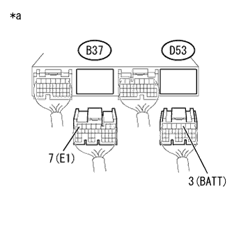
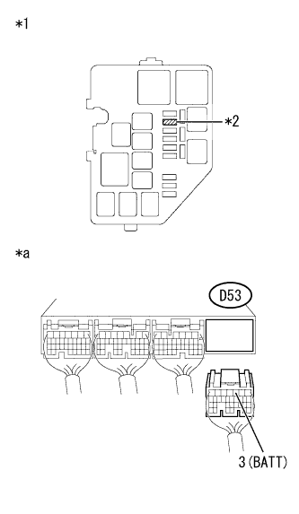
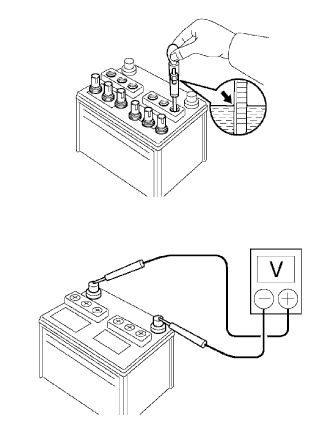

DTC P0560/96 バッテリ異常 |
| DTC No. SAE/TCCS | DTC検出条件
| 点検部位 |
|---|---|---|
| P0560/96 |
|
|

| 手順1 | ワイヤハーネスおよびコネクター点検（エンジンコントロールコンピュータ - バッテリ） |
参照。|  |
エンジンコントロールコンピュータのコネクターB37およびD53を切り離す。
SST(トヨタエレクトリカルテスター)を使用して、端子間の電圧を測定する。(端子配列は参照)
| 点検端子 | 点検条件 | 基準値 |
|---|---|---|
| D53- 3 (BATT) - B37- 7 (E1) | 常時 | 11 to 14 V |
| *a | 車両ワイヤハーネスコネクター後側 (エンジンコントロールコンピュータ接続コネクター) |
| 結果 | 飛び先 |
|---|---|
| 基準値外 | A |
| 基準値内 | B |
|
| ||||
| A | |
| 手順2 | ワイヤハーネスおよびコネクター点検（エンジンルームリレーブロック - エンジンコントロールコンピュータ） |
参照。バッテリマイナスターミナルを切り離す。
|  |
エンジンルームリレーブロックからEFIヒューズを取りはずす。
エンジンコントロールコンピュータのコネクターD53を切り離す。
SST(トヨタエレクトリカルテスター)を使用して、端子間の抵抗を測定する。(端子配列は参照)
| 点検端子 | 点検条件 | 基準値 |
|---|---|---|
| EFIヒューズホルダの2端子 - D53-3 (BATT) | 常時 | 1 Ω未満 |
| 点検端子 | 点検条件 | 基準値 |
|---|---|---|
| EFIヒューズホルダの2端子およびD53-3 (BATT) - 他の端子間およびボデーアース間 | 常時 | 10 kΩ以上 |
| *1 | エンジンルームリレーブロック |
| *2 | EFIヒューズ |
| *a | 車両ワイヤハーネスコネクター後側 (エンジンコントロールコンピュータ接続コネクター) |
|
| ||||
| OK | |
| 手順3 | バッテリ単体点検 |
液量点検
|  |
比重点検
各セルのバッテリ比重を点検する。
電圧点検
サーフェイス充電分を取り除くために、走行後エンジンを止めてからIG ON(20秒以内)にし電気装置(ヘッドライト、ブロワモータ、リヤデッフォッガ等)のスイッチをONにする。
IG OFFにし、電気装置のスイッチをOFFにする。
SST(トヨタエレクトリカルテスター)を使用して、ターミナル間のバッテリ電圧を測定する。
クランキング時のバッテリ電圧値を測定する。
|
| ||||
| OK | ||
| ||
| 手順4 | バッテリ単体点検 |
液量点検
比重点検
各セルのバッテリ比重を点検する。
電圧点検
サーフェイス充電分を取り除くために、走行後エンジンを止めてからIG ON(20秒以内)にし電気装置(ヘッドライト、ブロワモータ、リヤデッフォッガ等)のスイッチをONにする。
IG OFFにし、電気装置のスイッチをOFFにする。
SST(トヨタエレクトリカルテスター)を使用して、ターミナル間のバッテリ電圧を測定する。
クランキング時のバッテリ電圧値を測定する。
|
| ||||
| OK | ||
| ||